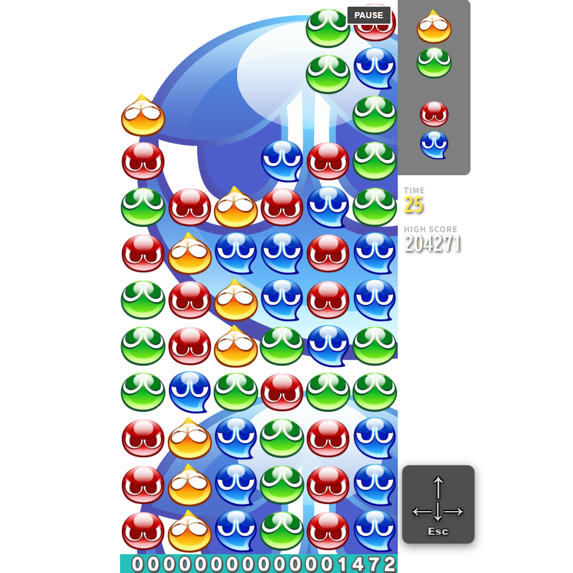
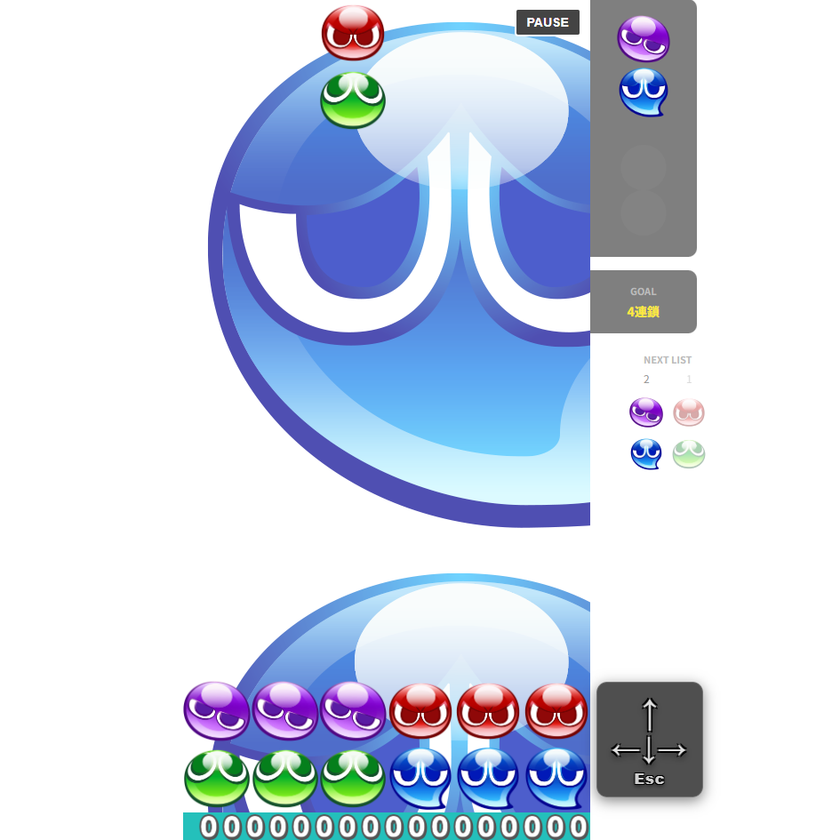

【個人開発】JavaScriptゲーム拡張・機能カスタマイズ「Puyo Programming Custom」
⚠️ 初回アクセス時のご注意
無料サーバー（Render）の仕様上、アクセス時にログ画面（SERVICE WAKING UP... 等の黒い画面）が表示され、アプリが起動するまでに30秒〜1分ほどかかる場合がございます。画面が自動で切り替わるまで、そのままお待ちいただけますと幸いです。
💡 お試しプレイ（動作確認）のご案内
本作品はWebブラウザ上でそのまま遊んでいただけます。Firebase Authenticationを活用したログイン機能を備えており、ログインすることでハイスコアの保存等の機能をお試しいただけます。

【スコアタック】制限時間内に高得点を狙うゲームUI

【なぞぷよ】指定されたお題盤面をクリアするゲームUI
作品概要
セガ公式の『ぷよぷよプログラミング』ソースコードをベースに、JavaScriptによる本格的な機能拡張・ゲームロジック改変を行ったパズルゲームです。単なる動的UIにとどまらず、「とこぷよ」「スコアアタック」「なぞぷよ」といった複数モードの実装や、Firebaseを用いたユーザー認証・スコア保存機能を組み込みました。
開発背景とプロダクトの独自性
💡 制作背景（プレイヤー視点 ✕ プログラミング学習）
私自身、ぷよぷよ歴10年以上で最高世界ランキング2位・大会優勝5度といった実績を持つほど本作品を愛好しています。専門学校でプログラミングを学ぶ中で公式の『ぷよぷよプログラミング』を知り、「トッププレイヤーとしての知見を活かして既存コードを拡張すれば、より魅力的で完成度の高いWebアプリが作れる」と考え開発を開始しました。
✨ 本プロダクトならではの独自性と工夫
単なる教材の枠を超え、競技プレイヤー目線での「本物さながらの操作感」と「ストレスのないWeb UI/UX」を追求しました。
- オリジナル「なぞぷよ」全15問の自作： 本作品のために全15問のお題盤面・解法を自作。徐々に難易度が上がる絶妙なレベルデザインを施しています。
- スコアアタック ✕ ハイスコア保存機能： 制限時間内で高得点を狙うモードを構築し、Firebase AuthenticationおよびFirestoreと連携して個人のハイスコアを安全に保存できる仕組みを実装しました。
- 演出とプレイ感の向上： VOICEVOX（ずんだもん）のボイス素材やUI効果を組み込み、ゲームとしての爽快感を極限まで高めています。
JavaScript・開発での挑戦と解決策
① プレイヤー視点（世界2位の知見）に基づく本家挙動の再現
既存の教材コードでは、本家の『ぷよぷよ』と比較して操作感や盤面表現、演出のタイミングにズレがあり、競技プレイヤーとして違和感が生じる部分がありました。
【解決策】 「ちぎり（ぷよの分離）」のスピード感調整、NEXTぷよ表示、13段目の「幽霊ぷよ」の判定実装、本家に即したスコア計算式の修正を実施。プレイヤーの感覚に寄り添った挙動を再現しました。
② 演出処理の調和と、特殊入力によるフリーズ防止策（安定性の確保）
スコアアタックの演出中（batankyu）におけるスコア消失バグの解決に加え、ゲーム画面で「↑キーと↓キーの同時長押し」等の特殊操作が発生した際に、処理がスタックして画面がフリーズしてしまう課題がありました。
【解決策】 `player.js` に潜んでいた不要なリロード処理を除去して演出からリザルトへの遷移を正常化。さらに、本家特有の繊細な操作感を損なう無理な判定修正は避け、同時押し等の例外入力時には「自動でタイトル画面に戻るエスケープ処理」を実装することで、本家同様のプレイ感を維持したまま安定動作を保証する設計としました。
③ 非同期処理・Firestoreデータ連携と離脱を防ぐUX設計
「なぞぷよ」の消去アニメーションとクリア判定の表示順ズレや、Firestoreへのペイロード構造エラー（`setDoc`）による保存失敗、さらに未ログイン時のプレイデータ損失が課題でした。
【解決策】 `puzzlePendingClear` フラグを導入してDOM崩れを防ぐ非同期制御を確立。データ保存面では、非ログイン時も一過性のデータ（`window._pendingSave`）として保持し、後からモーダル経由でログインした際にデータを自動引き継ぎして保存するスムーズな体験を構築しました。
④ キーボード・マウス双方に対応した統一感のあるUI/UX設計
ポーズ画面やゲーム終了後の選択画面（もう一度遊ぶ／タイトルへ戻る等）において、操作方法や見た目がばらばらだとプレイヤーの没入感を削いでしまう懸念がありました。
【解決策】 すべてのモーダル・選択画面のレイアウトを統一。キーボード操作（Esc/Enter等）とマウス操作のどちらでも迷わず直感的に操作できるようナビゲーションを最適化しました。
このプロジェクトを通じて得た学び
本作品では、AIツールを効果的に併用しながら複数ファイルにわたる5,000行超のコードの編集・保守・テストを繰り返し、完成までやり遂げることができました。
開発過程では、複数ソースを横断する原因調査やログ出力によるデバッグの高速ループを体得しただけでなく、競技者視点での「本家と同じ操作感」を愚直に守り抜く重要性を学びました。特定操作での不具合に対し、無理にロジックを変更して操作感を崩すのではなく、プレイ感を最優先した上でフリーズを防ぐエスケープ処理（安全策）を組み込むなど、限られた期間の中でUXとシステムの安定性を両立させる実践的な設計判断の重要性を学びました。